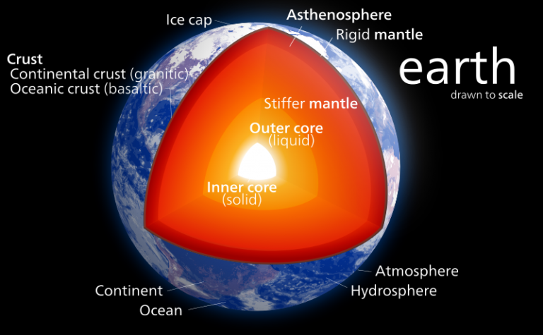
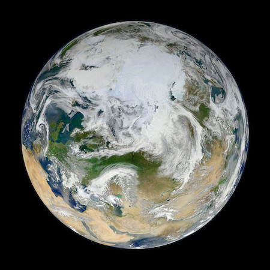

Earth
Our atmosphere is made mostly of nitrogen and has plenty of oxygen for us to breathe. The atmosphere also protects us from incoming meteoroids, most of which break up in our atmosphere before they can strike the surface as meteorites.
Since we live here, you might think we know all there is to know about Earth. Not at all, actually! We have a lot we can learn about our home planet. Right now, there are many satellites orbiting Earth taking pictures and measurements. This is how we can learn more about weather, oceans, soil, climate change, and many other important topics.
Structure and Surface

Time on Earth
Earth's Neighbors
What does Earth look like?
 This Apollo 11 picture taken by an astronaut in 1969 shows the Earth rising over the moon. Doesn't it look small?
 This is a view of Earth looking just at the northern portion.
This is a view of Earth looking just at the northern portion.
 A NASA camera on the Deep Space Climate Observatory satellite took this picture of the entire sunlit side of Earth from one million miles away.
A NASA camera on the Deep Space Climate Observatory satellite took this picture of the entire sunlit side of Earth from one million miles away.